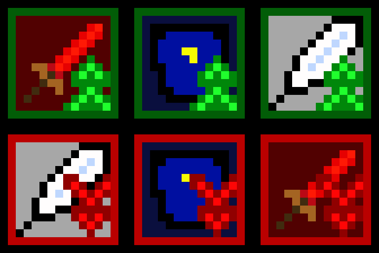
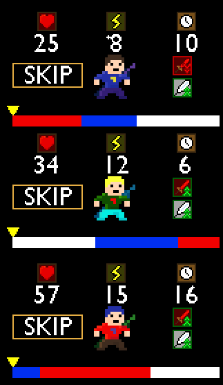

July 20, 2019.
Hey everyone! A little while ago, I made a dev-log about the new icons I made for Phases. You can check out the original post here. Basically, anything that was previously displayed by text has been switch to an icon. However, there are still a few icons yet to be made, like Buffs and Debuffs. So here are some new icons for those!

They are all pretty much the same as before, but with an arrow in front of it. They also have colors, green meaning good (buffs) and red meaning bad (debuff). The only things that have buffs/debuffs are attack and speed. However, I do plan on adding defense buffs/debuffs soon (along with some changes to that stat) so I went ahead and made an icon for that too. The icons show up next to the character whenever they have a buff/debuff. Here is a picture.

I had to make sure I had space for everything else like the skip button and the selection arrow, but I managed to make it work. However, I really can’t see anything else going in that area so hopefully there is nothing left.
I’m not sure how many more icons I have left to make, so let's just leave this at a “To Be Continued…”
Thanks for reading,
Andy